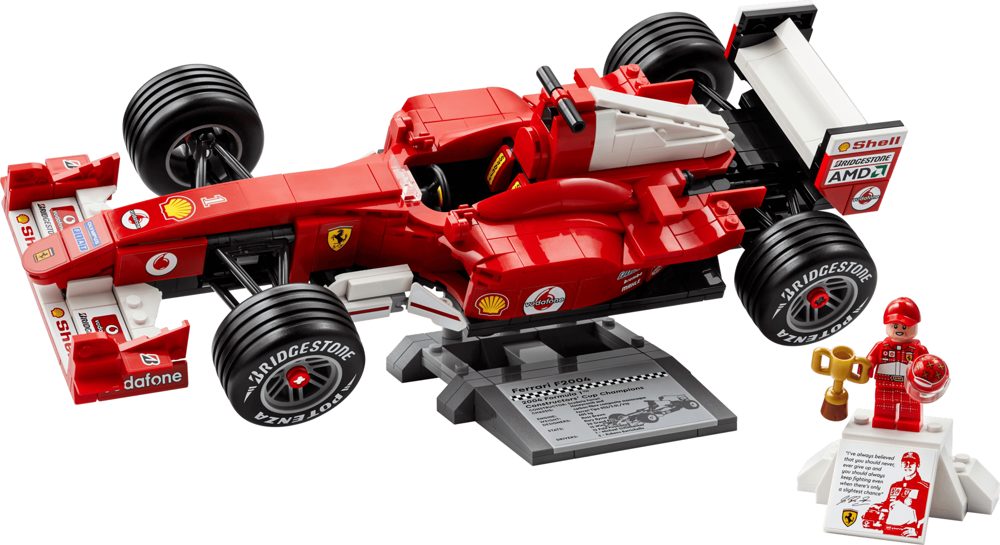

LEGO Icons 11375
שחזרו את אחד מרכבי הפורמולה 1 האייקוניים ביותר בהיסטוריה עם דגם הבנייה Ferrari F2004 מסדרת LEGO® Icons.
מדובר במכונית ששלטה בעונת 2004 והובילה את מייקל שומאכר לאליפות נוספת.
הדגם כולל פרטים ריאליסטיים מרשימים:
הגה עובד, מנוע V10 מפורט, צמיגי סליק מקצועיים ומבנה מדויק של הרכב.
בנוסף, הסט כולל דמות של מייקל שומאכר עם קסדה וגביע, יחד עם מעמד תצוגה יוקרתי עם פרטי הרכב – מושלם להצגה בבית או במשרד.
סט אספנות מושלם לחובבי פורמולה 1, רכבים ולגו.
מחיר: 419 ₪
להזמנה